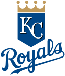

The Kansas City Royals are an American professional baseball team based in Kansas City, Missouri. The Royals compete in Major League Baseball
(MLB) as a member team of the American League (AL) Central division. The team was founded as an expansion franchise in 1969, and has participated
in four World Series, winning in 1985 and 2015, and losing in 1980 and 2014.
Royals Official
Roylas Wiki